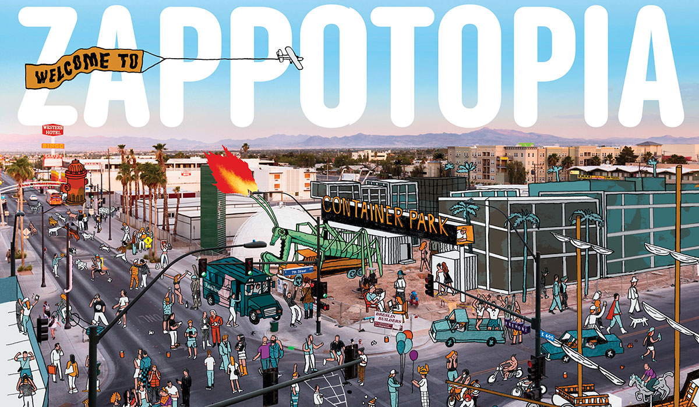

I am a front-end developer who is very passionate about user experiance and design. There may be 10 working products but the one with the best design will be used the most. Thus, I beleive it is critical to have good front-end developers. In my project I have used html, css, and javascript. The website is created this way because I thought it would be eaisiest to read and understand all the topics. This design is also not used very often. To make the website responsive you can use media queries and make it scrollable up and down.
